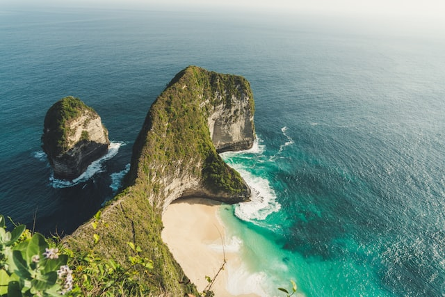
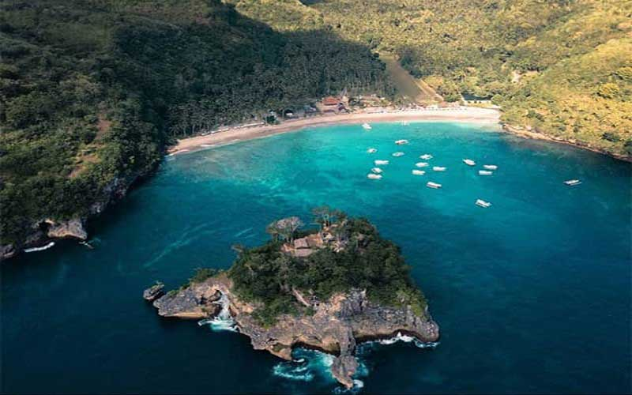
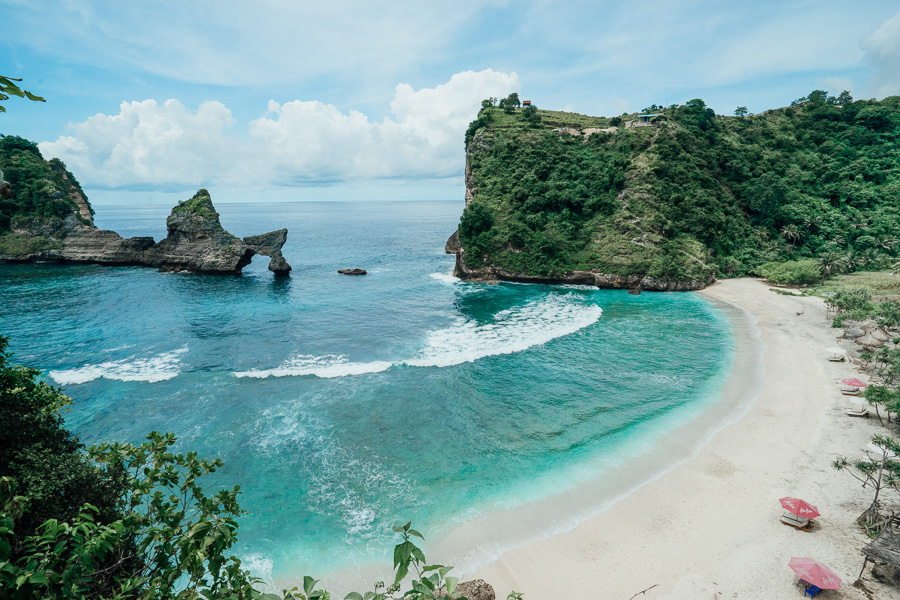
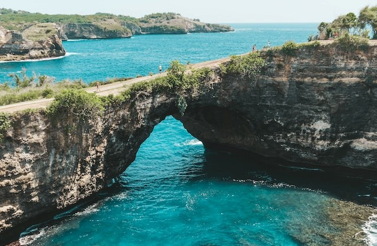
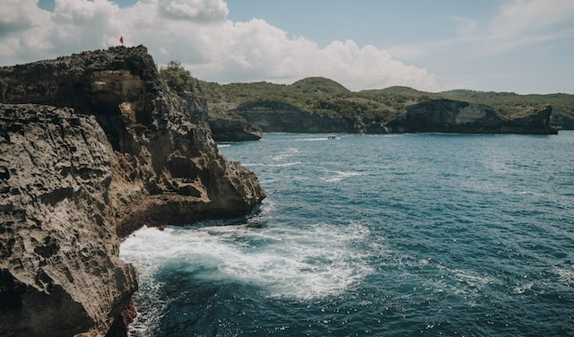
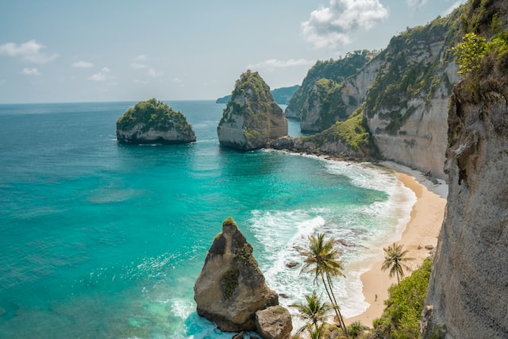
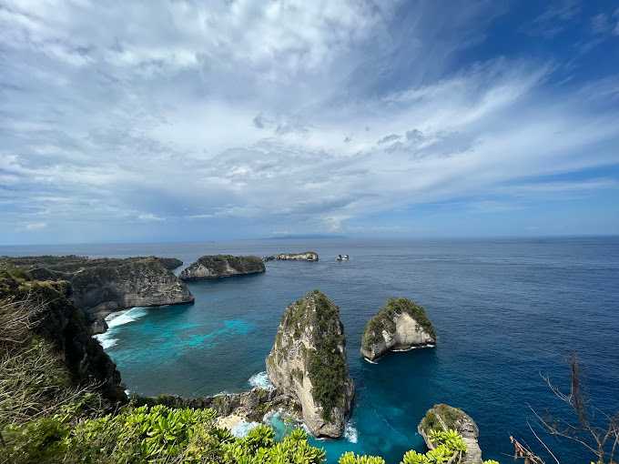
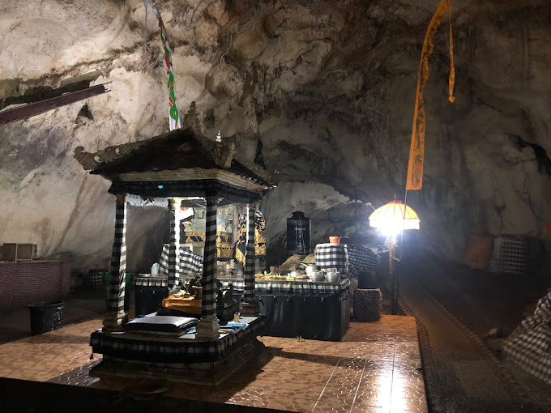
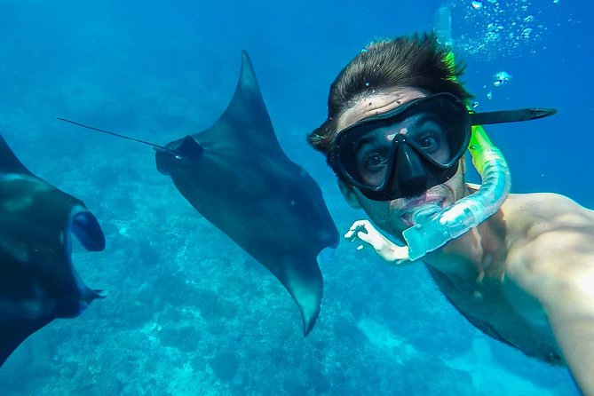
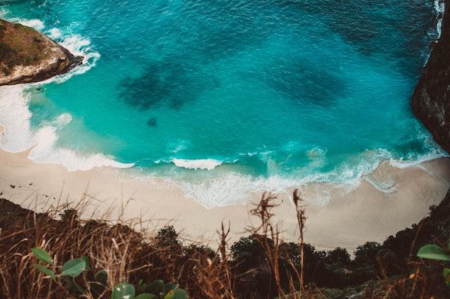

Nusa Penida telah menjadi salah satu destinasi wisata paling populer di Indonesia selama beberapa tahun terakhir, dan itu tidak mengherankan mengingat keindahan alamnya yang menakjubkan. Jika Anda mencari tempat yang menakjubkan untuk dikunjungi di tahun 2023, Nusa Penida mungkin bisa menjadi pilihan yang tepat. Berikut adalah 10 alasan mengapa Nusa Penida layak dikunjungi di tahun 2023:

Pantai ini menjadi ikonik karena pemandangan unik dari tebing kapur dengan pasir putih yang membentuk lekukan mirip sirip hiu. Pantai Kelingking juga menawarkan air biru jernih dan terumbu karang yang indah untuk menyelam dan snorkeling.

Pantai ini terkenal dengan pasir putih yang halus dan air biru yang jernih, dengan pemandangan terumbu karang yang memukau di bawah permukaan laut. Di pantai ini juga terdapat sebuah kuil kecil yang bisa dikunjungi.

Terletak di ujung timur Nusa Penida, Atuh Beach memiliki pasir putih yang bersih dan air yang tenang serta terumbu karang yang berwarna-warni. Pemandangan di pantai ini dikelilingi oleh bukit karang menjulang tinggi dan sebuah pulau kecil yang menarik.

Pantai ini terletak di dalam tebing kapur dan hanya bisa dicapai dengan berjalan kaki. Pantai ini terkenal dengan airnya yang tenang dan pemandangan gua alam yang terbentuk akibat runtuhan tebing.

Meskipun bukan pantai sebenarnya, Angel's Billabong adalah kolam air jernih alami yang terbentuk akibat terpaan ombak. Terletak di ujung barat daya Nusa Penida, kolam ini memiliki pemandangan laut yang memukau dan terumbu karang yang indah.

Pantai ini tersembunyi di bawah bukit karang yang tinggi dan hanya bisa dicapai dengan menuruni tangga curam. Pasir putih dan air birunya yang jernih, bersama dengan pemandangan bukit karang menjulang tinggi di sekitarnya, menjadikan pantai ini sangat instagramable.

Pulau Seribu adalah tempat yang sempurna untuk bersantai dan menikmati pemandangan laut yang indah. Pulau ini dikelilingi oleh air yang jernih dan terumbu karang yang mempesona, serta memiliki banyak kegiatan seperti snorkeling, diving, dan berjalan-jalan di pantai.

Goa Giri Putri adalah tempat yang sangat menarik di Nusa Penida, di mana Anda dapat melihat keindahan alam bawah tanah. Goa ini sangat terkenal karena memiliki ornamen stalaktit dan stalakmit yang menakjubkan.

Manta Point adalah tempat yang sangat terkenal di Nusa Penida karena melihat ikan pari yang sangat besar. Tempat ini juga merupakan tempat terbaik untuk snorkeling atau diving karena airnya sangat jernih dan terumbu karangnya sangat indah.

Taman Nasional Nusa Penida menawarkan banyak keindahan alam, seperti hutan hujan tropis, pantai pasir putih, terumbu karang, dan gua-gua bawah tanah. Anda dapat menjelajahi taman ini dengan berjalan kaki atau menyewa motor untuk mengelilingi area.
Untuk merasakan keindahan Nusa Penida secara langsung, sebaiknya Anda mencoba paket tour dari Bali Mutiara Tours. Dengan paket tour ini, Anda akan mendapatkan pengalaman yang tak terlupakan selama berlibur di Nusa Penida. Jadi, jangan ragu untuk memesan Paket Tour Nusa Penida dari Bali Mutiara Tours dan nikmati liburan Anda dengan pemandangan alam yang spektakuler.

Hubungi
Kami